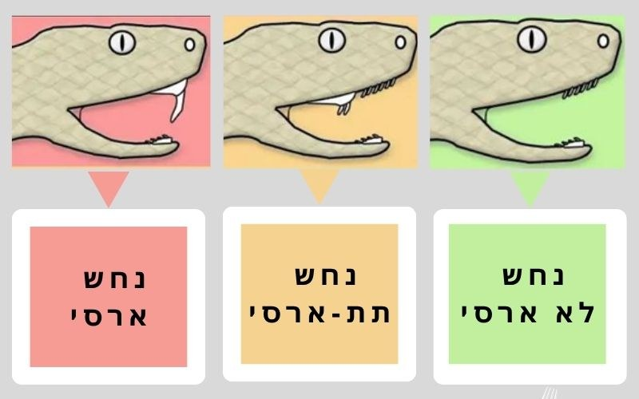

היכולת לזהות נחשים ולהבין את מאפייניהם היא חלק חשוב מהמודעות ומהבטיחות, במיוחד באזורים שבהם נחשים מצויים בקרבת בתים, פרדסים ואזורי מגורים. עם זאת, חשוב להדגיש כי אין סימן חיצוני יחיד שניתן להסתמך עליו באופן מוחלט כדי לקבוע אם נחש הוא ארסי, תת-ארסי או לא־ארסי.
צורת הראש, גודל הגוף, אורך הנחש, צורת האישון, הצבע או הדוגמאות עשויים לסייע בזיהוי מינים מסוימים, אך הם עלולים להטעות אם משתמשים בהם לבד. לכן, זיהוי מדויק של המין, המבוסס על שילוב של מאפיינים אנטומיים, התנהגותיים וסביבתיים, הוא הבסיס הבטוח ביותר.

🐍 נחשים ארסיים
לנחשים ארסיים יש ארס שעלול לגרום להשפעות מסוכנות על בני אדם או בעלי חיים, וכן אמצעים ייעודיים להזרקת הארס, כגון ניבים או שיניים המחוברות לבלוטות ארס. השפעת הארס משתנה ממין למין; היא עשויה לפגוע במערכת העצבים, בדם, בשרירים או ברקמות.
🐍 נחשים תת-ארסיים
לחלק מהמינים יש בלוטות או הפרשות ארסיות, ולעיתים שיניים ייעודיות הממוקמות בחלק האחורי של הפה. השפעת הארס שלהם על האדם מוגבלת בדרך כלל בהשוואה למינים הארסיים המוכרים, אך אין פירוש הדבר שהם בטוחים לחלוטין. מינים מסוימים עלולים לגרום לפציעות או לתסמינים המחייבים זהירות, ולכן אין לאחוז בהם או לטפל בהם בידיים.
🐍 נחשים לא־ארסיים
לנחשים לא־ארסיים אין ארס המשפיע על האדם ואין להם מנגנון ייעודי להזרקתו. הם מסתמכים בציד ובהגנה על אמצעים אחרים, כגון נשיכה, ליפוף סביב הטרף או בליעתו ישירות. עם זאת, תיאור נחש כלא־ארסי אינו אומר שהוא אינו מסוגל לנשוך או לגרום לפציעה.
סימנים שעשויים לסייע בזיהוי הנחש
- ניבים ושינייםלחלק מהנחשים הארסיים יש ניבים ייעודיים להזרקת הארס, שעשויים להיות ארוכים ונעים בחלק מהמינים, או קצרים וקבועים באחרים. אך ניסיון להתקרב לנחש או לפתוח את פיו כדי לבדוק את שיניו הוא מסוכן ביותר ואין לעשותו.
- צורת הראשלחלק מהצפעים הארסיים ראש רחב או משולש, הקשור בחלק מהמינים לנוכחות בלוטות הארס והשרירים הקשורים אליהן. אך צורת הראש לבדה אינה מספיקה לזיהוי הנחש; נחשים לא־ארסיים מסוימים מסוגלים לשטח את ראשם כשהם חשים מאוימים, כך שהוא נראה משולש יותר.
- צורת האישוןאצל מינים מסוימים האישון עשוי להיות אנכי, ואצל אחרים עגול. אך תכונה זו אינה כלל גורף; יש מינים ארסיים בעלי אישון עגול, ותנאי התאורה עשויים להשפיע על מראה האישון.
- צורת הגוף והזנבחלק מהצפעים הארסיים מתאפיינים בגוף חסון וזנב קצר יחסית, בעוד אחרים מתאפיינים בגוף ארוך ודק. עם זאת, קיימים חריגים רבים, ולכן אי אפשר לשפוט את מסוכנות הנחש לפי צורת גופו או זנבו בלבד.
- אורך וגודל הנחשאורך הנחש עשוי להיות מדד מסייע בזיהוי המין, אך אינו קובע אם הוא ארסי או לא. יש צפעים ארסיים קצרים, מינים ארסיים גדולים וארוכים, וכן נחשים לא־ארסיים בגדלים שונים. אורך הנחש מושפע מגורמים רבים, בהם המין, הגיל, מין הפרט, האזור הגאוגרפי, זמינות המזון והתנאים הסביבתיים. לכן אי אפשר לומר שנחש ארוך הוא ארסי או שנחש קצר אינו ארסי.
- צבעים ודוגמאותהצבעים והדוגמאות עשויים לאפיין מינים מסוימים, אך אינם ראיה מוחלטת לארסיות. נחשים לא־ארסיים מסוימים עשויים לדמות בצבעם או בדוגמאותיהם למינים ארסיים, תופעה המוכרת כחיקוי (מימיקרי).
- התנהגות הגנתיתהרמת הראש, נשיפה, השמעת קולות או נקיטת עמדת הגנה אינם בהכרח סימן לכך שהנחש ארסי. התנהגויות אלו עשויות להופיע אצל נחשים ארסיים ולא־ארסיים כאחד, ולרוב הן אמצעי הגנה כשהנחש חש מאוים.
- מיקום גאוגרפיהמיקום הגאוגרפי הוא מהמרכיבים החשובים ביותר בזיהוי הנחש. הכרת המינים הקיימים באזור מסוים מסייעת לצמצם את אפשרויות הזיהוי, משום שמיני הנחשים משתנים ממדינה למדינה, מאזור לאזור, ולעיתים אף בין בתי גידול סמוכים.
🔍 זיהוי המין הוא הגורם החשוב ביותר
הדרך הטובה ביותר להבחין בין נחשים ארסיים, תת-ארסיים ולא־ארסיים היא זיהוי מדויק של המין, על ידי בחינת שילוב של מאפיינים יחד — כגון צורת הקשקשים, הדוגמאות, צורת הראש והגוף, הזנב, השיניים, ההתנהגות והתפוצה הגאוגרפית.
אין להסתמך על כללים נפוצים כגון:
- «ראש משולש פירושו שהנחש ארסי»
- «אישון אנכי פירושו שהנחש ארסי»
- «נחש צבעוני הוא ארסי»
- «נחש ארוך הוא ארסי»
כללים אלה אינם תמיד מדויקים, ועלולים להוביל לטעויות מסוכנות.
⚠️ הבטיחות קודמת לכול
כשנתקלים בנחש שזהותו אינה ידועה, יש להתייחס אליו כאל נחש לא־מוכר, לא להתקרב אליו, לא לנסות לאחוז בו ולא להרוג אותו. גם אדם המנוסה בזיהוי נחשים חייב לנהוג בזהירות, משום שטעות בהערכה עלולה להיות בעלת השלכות חמורות. הכרת נחשים אינה אומרת להתקרב אליהם, אלא להבין אותם, לכבד את טבעם ולנהוג בהם בצורה בטוחה ואחראית. במקרה של הכשה, יש לפנות לעזרה רפואית מיד, ולא להסתמך על זיהוי עצמי של מין הנחש או להמתין להופעת תסמינים, שכן הטיפול מבוסס על הערכה רפואית מהירה ועשוי לחייב שימוש בנסיוב בהתאם למצב ולמין.
המודעות והידע מגנים על האדם, וההתנהלות האחראית מגנה על הנחשים ושומרת על תפקידם החשוב בטבע.